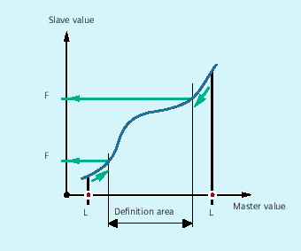
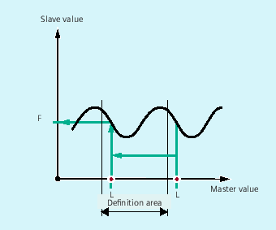

All commands for reading curve table values can also be used in synchronized actions (see also the chapter titled "Motion-synchronous actions").
When using the CTABINV, CTABTMIN, and CTABTMAX commands, make sure that:
Sufficient NC power is available at the time of execution
or
The number of segments in the curve table is queried prior to the call, so that the table concerned can be subdivided if necessary
If the specified <master value> is outside the definition range, the upper or lower limit is output as the following value:
If the specified <master value> is outside the definition range, the master value is evaluated modulo of the definition range and the corresponding following value is output:
The CTABINV command, therefore, requires an approximate value for the expected master value. CTABINV returns the leading value that is closest to the approximate value. The approximate value can be, for example, the master value from the previous interpolator clock cycle.
The output of the gradient (<gradient>) makes it possible to calculate the velocity of the leading or following axis at the corresponding position.
The optional specification of the leading and/or following axis is important if the leading and following axes are configured in different length units.
The CTABSSV and CTABSEV commands are not suitable to query programmed segments in the following cases:
Circles or involutes are programmed.
Chamfering or rounding with CHF/ RND is active
Smoothing with G643 is active
NC block compression (COMP...) is active.